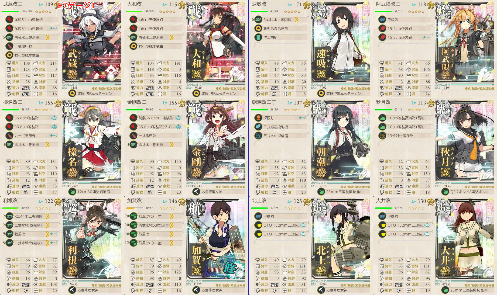
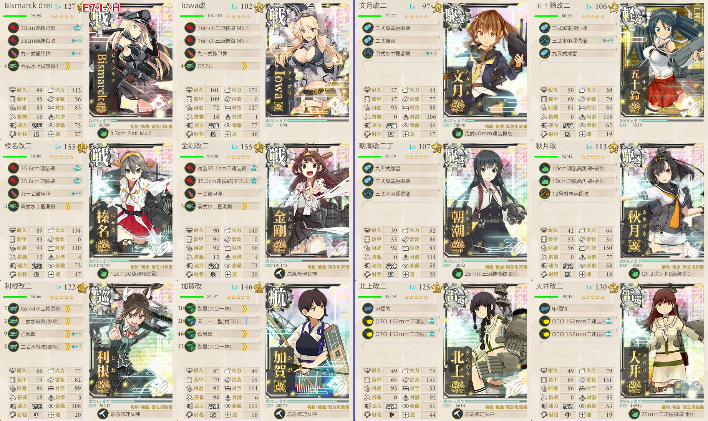
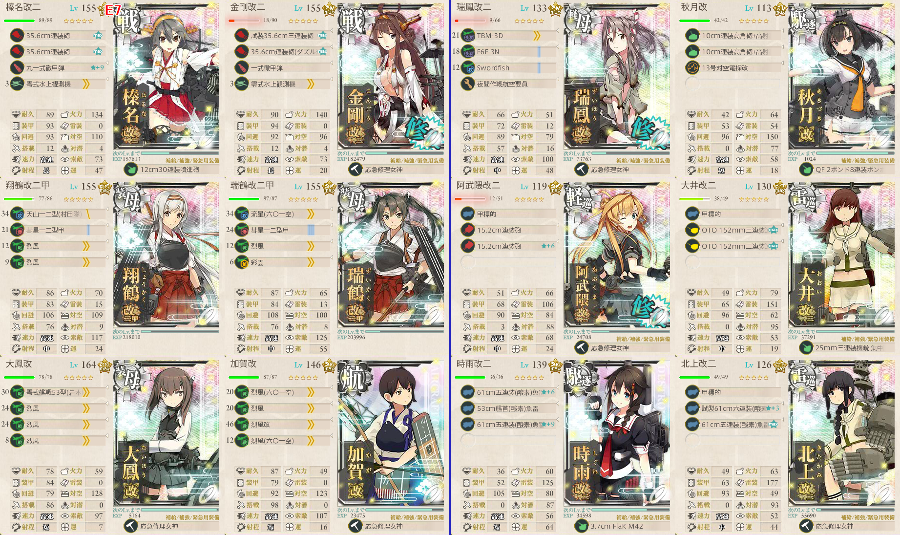

【艦これ】捷号決戦！邀撃、レイテ沖海戦(後篇) E7 エンガノ岬沖
2018年冬イベント E7（丙作戦）
ギミック1
- 空母機動部隊でQマスA勝利
- 基地航空隊 防空優勢 1回
- BCDIMQ
構成
- 高速統一
- Dマスの潜水艦対策に五十鈴採用
基地航空隊
出撃ログ（丙）
| 回数 | 編成 | ルート | 戦果 | |
|---|---|---|---|---|
| 1 | 第1 | 翔鶴 瑞鶴 榛名 金剛 千代田 千歳 | BCDIMQ | 防空優勢 A勝利 |
| 第2 | 瑞鳳 五十鈴 初月 秋月 北上 大井 | |||
敵編成
| マス | 敵航空戦力 | 敵潜水艦 | 備考 |
|---|---|---|---|
| C | あり | なし | 空襲戦 |
| D | なし | あり | 軽巡1 ツ級1 駆逐3 潜水1 |
| I | あり | なし | 空襲戦 |
| M | あり | なし | ヌ級2～3 ツ級1 駆逐2～3 |
| Q | あり | なし | 連合艦隊 ヌ改2 ヌ級1 戦艦1 駆逐2 + ツ級1 駆逐5 |
| あり | なし | 空母棲姫2 ヌ級 戦艦1 駆逐2 + ツ級 駆逐5 | |
ゲージ1
- EFJNTUV
構成

高速統一
戦艦4以下
利根/加賀はTマスの制空権を全力で取りに行く
Nマス処理のため、先制爆雷要員を一人
ボス戦で有利に立ち回るために洋上補給を利用
- 速吸はデフォルト低速のため、缶＋タービンで高速化
基地航空隊
- 基地空襲あり。防空部隊を一つは用意したい
- ボスは遠く、こちらの火力は洋上補給で確保できているのでTマス集中を１部隊用意する
- Nマスに対潜部隊（試製東海）を投げる
- 二式大艇 試製東海x2 TBM-3D
- 必要半径は8であり、試製東海のみなら二式大艇は不要
出撃ログ（丙）
| 回数 | 編成 | ルート | 戦果 | |
|---|---|---|---|---|
| 1 | 第1 | Bimarck Iowa 榛名 金剛 利根 加賀 | EFJNTUV | S勝利 |
| 第2 | 速吸 五十鈴 初月 秋月 北上 大井 | |||
| 2 | 第1 | Bimarck Iowa 榛名 金剛 利根 加賀 | EFJNTUV | A勝利 |
| 第2 | 速吸 五十鈴 初月 秋月 北上 大井 | |||
| 3 | 第1 | Bimarck Iowa 榛名 金剛 利根 加賀 | EFJNTUV | A勝利（叢雲） |
| 第2 | 速吸 阿武隈 朝潮 秋月 北上 大井 | |||
| 4 | 第1 | 武蔵 大和 榛名 金剛 利根 加賀 | EFJNTUV | S勝利（黒潮） ゲージ破壊 |
| 第2 | 速吸 阿武隈 朝潮 秋月 北上 大井 | |||
敵編成
| マス | 敵航空戦力 | 敵潜水艦 | 備考 |
|---|---|---|---|
| F | あり | なし | ヌ改1 軽巡1 ツ級1 駆逐3 |
| N | なし | あり | 潜水新棲姫+取り巻きの潜水艦のみ |
| T | あり | なし | 空母棲姫 ヌ級2 ツ級1 駆逐2 |
| U | なし | なし | ネ級2 ツ級1～2 駆逐2～3 |
| V | あり | なし | ボス 連合艦隊 戦艦水鬼改 戦艦2 ネ級2 ヌ級1 + ツ級1 駆逐5 |
| あり | なし | 最終形態 戦艦水鬼壊 戦艦2 ネ級2 ヌ級1 + ツ級1 駆逐5 | |
ギミック2（L/Hマス）
- LマスA勝利
- HマスA勝利
- 水上打撃部隊でEFJKLH
構成

基地航空隊
- 空襲はもう来ないため、基地航空隊はフル出撃できる
出撃ログ（丙）
| 回数 | 編成 | ルート | 戦果 | |
|---|---|---|---|---|
| 1 | 第1 | Bismarck Iowa 榛名 金剛 利根 加賀 | EFJKL | L S勝利 H S勝利 |
| 第2 | 文月 五十鈴 朝潮 秋月 北上 大井 | |||
敵編成
| マス | 敵航空戦力 | 敵潜水艦 | 備考 |
|---|---|---|---|
| K | あり | なし | ヲ級1 軽巡1 ツ級1 駆逐3 |
| L | あり | なし | ヌ級2～3 ツ級1 駆逐2～3 |
| H | なし | あり | 潜水新棲姫1 潜水ソ級3～4 |
Dマス/ボス
L/H後であれば、Dマスギミックで短縮ルート解放可能
DマスA勝利
- 機動部隊でBCD
BDIMWX
構成

- ルート解放後、そのまま進軍していけばボスに突入できる
- 制空権を意識し、加賀と大鳳は艦戦フル搭載
- ボスが異常に固く、時雨と北上のカットインが頼みの綱
- 装甲破砕のある乙のほうが簡単なのではないかとさえ疑うほど
基地航空隊
- ボス戦では陸攻がほとんど役に立たないので、陸戦と艦戦を二式大艇で運ぶ
出撃ログ（丙）
| 回数 | 編成 | ルート | 戦果 | |
|---|---|---|---|---|
| 1 | 第1 | 榛名 金剛 翔鶴 瑞鶴 大鳳 加賀 | BCDIMWX | D S勝利 X S勝利（三隈） |
| 第2 | 瑞鳳 阿武隈 朝潮 秋月 北上 大井 | |||
| 2 | 第1 | 榛名 金剛 翔鶴 瑞鶴 大鳳 加賀 | BDIMWX | A勝利（衣笠） |
| 第2 | 瑞鳳 阿武隈 朝潮 秋月 北上 大井 | |||
| 3 | 第1 | 榛名 金剛 翔鶴 瑞鶴 大鳳 加賀 | BDIMWX | S勝利（Ark Royal） |
| 第2 | 瑞鳳 秋月 阿武隈 大井 時雨 北上 大井 | |||
| 4 | 第1 | 榛名 金剛 翔鶴 瑞鶴 大鳳 加賀 | BDIMWX | S勝利（高雄） |
| 第2 | 瑞鳳 秋月 阿武隈 大井 時雨 北上 大井 | |||
| 5 | 第1 | 榛名 金剛 翔鶴 瑞鶴 大鳳 加賀 | BDIMWX | S勝利（最上） |
| 第2 | 瑞鳳 秋月 阿武隈 大井 時雨 北上 大井 | |||
| 6 | 第1 | 榛名 金剛 翔鶴 瑞鶴 大鳳 加賀 | BDIMWX | S勝利（球磨） ゲージ破壊 |
| 第2 | 瑞鳳 秋月 阿武隈 大井 時雨 北上 大井 | |||
敵編成
| マス | 敵航空戦力 | 敵潜水艦 | 備考 |
|---|---|---|---|
| W | なし | なし | ネ級2 ツ級2 駆逐2 |
| X | あり | なし | ボス 連合艦隊 深海鶴棲姫 ヌ改3 ネ級2 + 軽巡1 ツ級2 駆逐3 |
| あり | なし | 最終形態 深海鶴棲姫壊 ヌ改2 戦艦棲姫1 ネ級2 + 軽巡1 ツ級2 駆逐3 | |